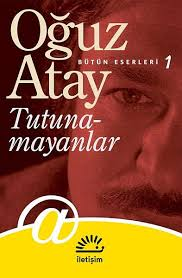
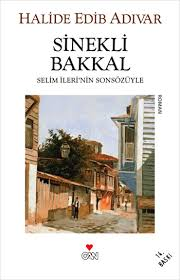
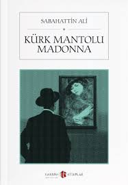

Türk Edebiyatının en önemli yazarlarından Oğuz Atay’ın ilk
eseri *Tutunamayanlar*, yazarın dili ve anlatım tarzı itibarıyla
Türk Edebiyatında yeni bir dönemi başlatmıştır. 2002 yılında
UNESCO tarafından İngilizce diline çevrilmesi
gereken seçkin edebiyat eseri olarak seçilen eser, söyleyiş biçimi
bakımından postmodern edebiyat kategorisinde değerlendirilmektedir.

Milli mücadelenin kadın kahramanı Halide Edip Adıvar’ın ünlü
romanı, *Sinekli Bakkal*, temel olarak doğu-batı çatışmasını
irdeleyen bir eser. Bu çatışmayı daha küçük yaştan dini eğitim alan
güzel sesli Rabia’nın, İtalyan piyanist Peregrini’ye olan aşkı
sembolize etmektedir.

Öykü, roman ve şiir türünde eserler kaleme alan
Sabahattin Ali’nin *Kürk Mantolu Madonna* adlı eseri, trajik
bir aşk hikâyesini anlatmaktadır. Bireylerin üzerinden toplumsal
meselelere de değinen eser bugün hala en çok rağbet gören Türk
klasikleri arasında.
